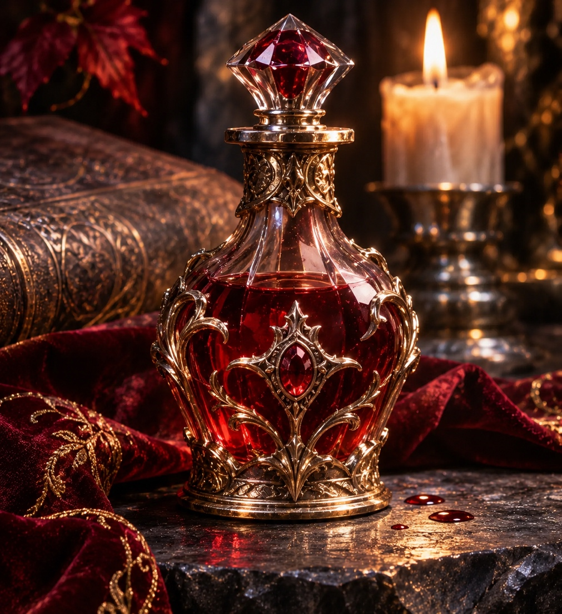

Blood Magic is also known as Blood Sorcery. It is a very ancient form of magic which is potent, powerful and potentially very dangerous. It uses blood, either animal or human, as a sacrifice or instrument to summon Dark Forces. When human blood is used in a ritual, it will contain that person’s vital energy, possibly providing links to their soul or essential life force.
Core Concepts
Life-Force/ Power
Blood is an intense energy source that may even transcend elemental forces like Earth, Air, Fire and Water – because it is linked to a corporeal/living entity.
Perceptive Connections
Blood connects directly to an individual’s personality and soul. This can support healing, creating bonds between different souls, finding a loved one, or creating a curse! Bonds in blood in Elyndra often come through Fae promises, bargains or agreements where blood is exchanged. Such promises may be created between lovers, family members, Mates, servants or loyal court members, depending on the need.
The use of blood to bind bargains, promises and agreements can be used safely. Such promises are often held by magical ribbons of light which seal these promises. This is NOT the same as using/working with Blood Magic.
Sacrifice/Forfeit and Price
Customs surrounding Blood Magic work on a transaction. Nothing comes for free, and Magic always comes with a price where a bargain is created. Power, gain, even love may have to be paid for with something physical, pain or suffering or even a life. This can perhaps simply be a few drops of blood which tie the individual to another for a specific period of time or forever! Major bargains will require major forfeits and whether the cost is worth it has to be considered.
Purposes
- To create sigils, runes, symbols or magical signs/markings.
- To ensure an object is hallowed or blessed in a specific manner.
- To give energy/force to a magical immortal or creature
- To heal or mend where someone has been wounded.
- To increase an individual’s strength or power
- To change a person.
- To control or influence another; this may be psychological or physical
- Summoning darker forces.
- Producing/ creating magical creatures (Dragons, Sea-monsters, Leviathans, Snakes, serpents, Hybrid-Monsters, etc.)
- Creating rare materials which contain magical properties.
Witchcraft/ Sorcery/ Enchantment – Elyndra
In Elyndra - Fae world of Light and Shadow. the practice of Blood Magic is unwelcome. The world is kept in balance because of the respect shown between the Unseelie and Seelie Courts – The Seasonal Courts. And the protected realm of Limskada, the Mortal realm within Elyndra.
Both Seelie and Unseelie Seasonal Courts recognise the need for this Balance. However, there are always those who seek power and control and who will do anything to acquire it.
Blood Magic is frowned upon, especially by the Grey Brethren who live on Ystme – The Isle of Learning. Blood Magic is associated with the Untried passages, but, it is a magic in its own right and it is not something that is embraced easily in Elyndra.
Blood Magic uses substantial quantities of blood for it to be effective. Blood is potent, tied to a living existence, it is a concentrated fuel source and can surpass, Earth, Air, Fire and Water. Blood connects to an individual’s identity, being and soul. If Blood Magic is used for some reason, there is always a heavy cost – physical energy, a life or more than one, pain – a major sacrifice – like a Fae of high rank or a special child.
Blood Magic can summon Dark Creatures, hatch mythical creatures (like a new dragon) or evil creatures / demons/shifters with evil intentions.
It is a force which should only be considered as a last resort.
It is those individuals who crave power and influence who tend to gravitate towards Blood Magic and its companion Dark Magic.
Both forces come at great cost to the balance of the land and its safety.
There are creatures who ignore the warnings, embrace the danger and welcome the threats it contains.
These are:
- Vampires
- The Sareth
- The Morkel
- Demons
- The Undead
Not all these creatures practise Blood Magic. Some require blood for survival, while others hunt or feed upon it as part of their natural existence. Their relationship with blood does not necessarily make them practitioners of sorcery. Nevertheless, their presence adds another dimension to the darker and more dangerous aspects of Elyndra, a world where the boundaries between power, survival and sacrifice are not always easily defined.
